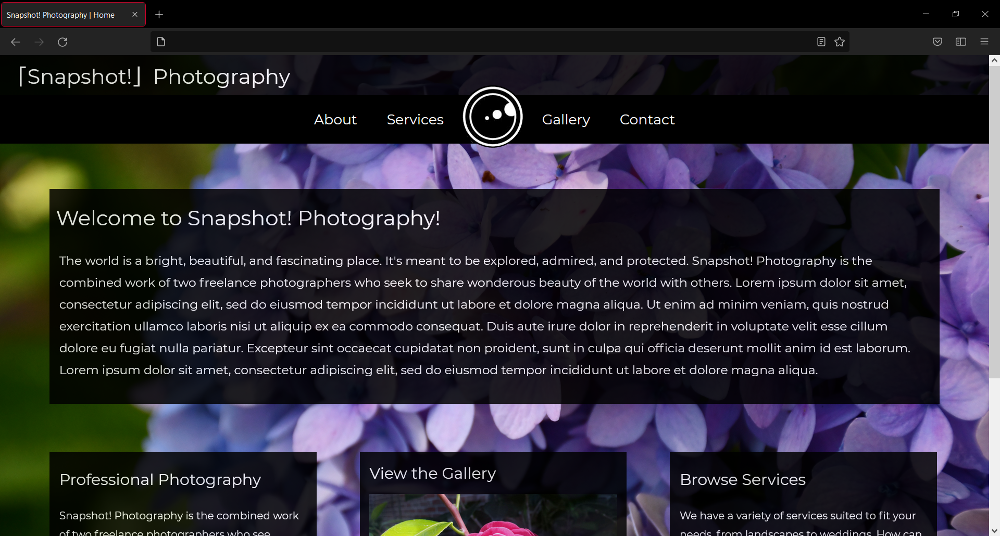

Home > Gallery > Snapshot! Photography

Snapshot! Photography
Snapshot! Photography is the photography portfolio site I designed last semester. Since I had already done so many portfolios for myself, I instead created a joint site for myself and my best friend Carlie. I had complete freedom of design, so I wanted to focus on the style I'd been perfecting for the past few years; a sleek, transparent dark theme that allowed our photography to take center stage. I also learned to let my designs breathe a bit more since the last time I designed from scratch, so I leaned into spacious elements more. Additionally, I got to play with the header a little bit more, adding a camera lens to the center of the nav bar as its homepage link.
This one's not hosted anywere. If you were actually hoping to take a look at it, let me know.